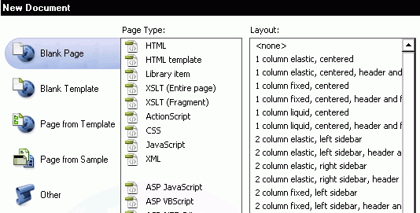
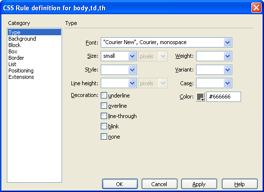

Start up Dreamweaver
Before you begin designing your web page, you will need to provide Dreamweaver some information about your website. Open Dreamweaver by clicking File/ New. This document box will open.

From here we will choos our options to begin our site. Star by choosing Blank Page. There are template available for your site. Choose one that appeals to the layout you want and need. The template will help keep each page look and feel the same throughout you web site. When choosing your HTML, you can choose any format you want. We will use XHTML 1.0 Transitional. It is the most commonly used.
The easiest way of formatting text and other web site content is by using CSS style. You can define positioning and formatting style to text, images, layers, tables and so on. In this tutorial we will show you some basic steps in creating styles.
A Cascading Style Sheet (CSS) will me made automatically with your template. You can edit your CSS from there you will able to change colors, typefonts, margins, and positioning to customize your template and make it your own.

Open DreamWeaver and create a new document. Select Window/ CSS Style to open CSS palette if it isn't already open. icon to create a new style.
Now, you will not be able to edit anything that is saved in your template from page to page. You must inset Editable Regions. Click on Insert/ Template Objects/ Editable Regions, Click on the or look under the Common tag and click on this symbol.  Place your Editable Region where you want to insert text, images, data, or other web forms.
Place your Editable Region where you want to insert text, images, data, or other web forms.
Now, every time you want to put a new page in your site, you can use you template to start your basic layout.